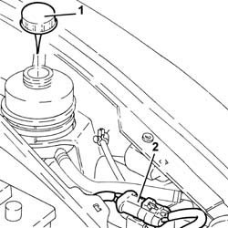
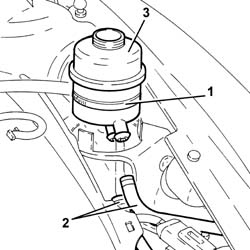
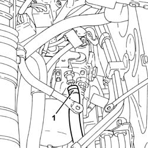
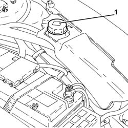
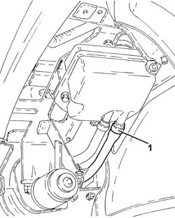
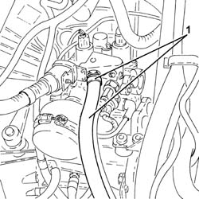
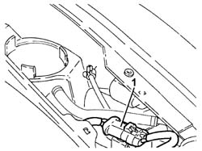
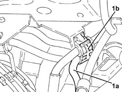
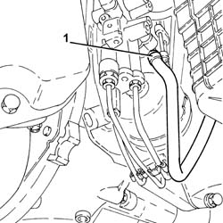

2127C22 pipe from hydraulic speed selection actuator unit to fluid reservoir - r r
- Path
- Procedures > 21 GEARBOX > 2127 ELECTRO-HYDRAULIC SELECTION. GEARBOX EXTERNAL. CONTROLS > 2127C hydraulic gear selection system > 2127C22 pipe from hydraulic speed selection actuator unit to fluid reservoir - r r
- Kind
- repair procedure (removal / refitting; the operation number is the code)
- Applies to
- all engines; all production periods
- Interactive page
- https://sloeber94.github.io/elrnDB-a156/en/#/3237949
Applies to: all engines; all production periods; only with equipment: Smart gearbox
 Removing
Removing
 Refitting
RefittingConnect the Examiner diagnostic equipment.
Keep the brake pedal depressed.
Select 'Alf 156 Selespeed' on the Examiner.
Select 'Control Unit Test' on the Examiner and select the 'Marelli Selespeed Automatic Transmission'.
Press 'Active Diagnosis' on the Examiner and select 'Accumulator depressurizing'.
Continue with the procedure on the Examiner.
1. Remove the electro-hydraulic selection gearbox hydraulic circuit fluid reservoir cap.
Drain the electro-hydraulic selection gearbox hydraulic circuit fluid reservoir.
2. Release the electrical connection for the electro-hydraulic gear selection system electric pump from the support.

Applies to: all engines; all production periods; only with equipment: Smart gearbox
5530B52 Battery DRIP TRAY/SUPPORT - R.R.
1. Loosen the band fixing the electro-hydraulic selection gearbox hydraulic circuit fluid reservoir.
2. Disconnect the supply and return pipes from the electro-hydraulic selection gearbox hydraulic circuit fluid reservoir.
3. Remove the electro-hydraulic gear selection hydraulic circuit fluid reservoir.

Applies to: all engines; all production periods; only with equipment: Smart gearbox
1. Disconnect the pipe between the electro-hydraulic gear selection hydraulic unit and the fluid reservoir, hydraulic unit side, and remove it.

Applies to: all engines; all production periods; only with equipment: Smart gearbox
Refitting
RemovingPlace the pipe between the electro-hydraulic gear selection hydraulic unit and the fluid reservoir back in its housing and connect it to the hydraulic unit.
Place the electro-hydraulic gear selection hydraulic circuit fluid reservoir back in its housing after having connected the supply and return pipes.
Fix the electro-hydraulic gear selection hydraulic circuit fluid reservoir to the mounting bracket using the band.
2127C06 Electro-hydraulic selection manual gearbox HYDRAULIC SYSTEM - Bleeding air
5530B52 Battery DRIP TRAY/SUPPORT - R.R.
Fix the electrical connection for the electro-hydraulic gear selection system electric pump to the mounting.
Applies to: engines: 2.0 JTS, 2.0 JTS; all production periods; only with equipment: Smart gearbox
Removing
RefittingPosition the vehicle on the ramp.
Connect the Examiner diagnostic equipment.
Select 'Alfa Selespeed' on the Examiner.
Select 'Control Unit Test' on the Examiner and select the 'Marelli Selespeed Automatic Transmission'.
Press 'Active Diagnosis' on the Examiner and select 'Accumulator depressurizing'.
Continue with the procedure on the Examiner.
1. Remove the electro-hydraulic selection gearbox hydraulic circuit fluid reservoir cap.
Drain the electro-hydraulic selection gearbox hydraulic circuit fluid reservoir.

Applies to: engines: 2.0 JTS, 2.0 JTS; all production periods; only with equipment: Smart gearbox
Proceed with removal 4450B02 left front wheel r r .
Proceed with removal - 7055B90 Left front WHEEL ARCH LINER - R.R. .
1. Loosen the band and disconnect the pipe between the electro-hydraulic gear selection hydraulic unit and the fluid reservoir, reservoir side.

Applies to: engines: 2.0 JTS, 2.0 JTS; all production periods; only with equipment: Smart gearbox
Proceed with removal 5530B10 battery - r+r .
Proceed with removal 5530B52 Battery DRIP TRAY/SUPPORT - R.R. .
1. Loosen the band and disconnect the pipe between the electro-hydraulic gear selection hydraulic unit and the fluid reservoir, hydraulic unit side, and remove it.

Applies to: engines: 2.0 JTS, 2.0 JTS; all production periods; only with equipment: Smart gearbox
Refitting
RemovingPlace the pipe between the electro-hydraulic gear selection hydraulic unit and the fluid reservoir back in its housing, connect it to the hydraulic unit and tighten the band.
Connect the pipe from the electro-hydraulic selection hydraulic actuator unit to the fluid reservoir, reservoir side and tighten the band.
Proceed with refitting - 7055B90 Left front WHEEL ARCH LINER - R.R. .
Proceed with refitting 4450B02 left front wheel r r .
Proceed with refitting 2127C04 ELECTROHYDRAULIC selection gearbox hydraulic system FLUID - Check level and top up if necessary. .
Proceed with refitting 2127C06 Electro-hydraulic selection manual gearbox HYDRAULIC SYSTEM - Bleeding air .
Proceed with refitting 5530B52 Battery DRIP TRAY/SUPPORT - R.R. .
Proceed with refitting 5530B10 battery - r+r .
Remove the car from the ramps.
Applies to: engines: 3.2 V6; all production periods; only with equipment: Smart gearbox
Removing
RefittingPosition the vehicle on the ramp
Connect the Examiner diagnostic equipment.
Keep the brake pedal depressed.
Select 'Alf 156 Selespeed' on the Examiner.
Select 'Control Unit Test' on the Examiner and select the 'Marelli Selespeed Automatic Transmission'.
Press 'Active Diagnosis' on the Examiner and select 'Accumulator depressurizing'.
Continue with the procedure on the Examiner.
Proceed with removal 2127C12 hydraulic gear selection fluid reservoir - r r .
Proceed with removal 5530B10 battery - r+r .
Proceed with removal 5530B52 Battery DRIP TRAY/SUPPORT - R.R. .
1. Release the electrical connection for the electro-hydraulic selection system electric pump from the support.

Applies to: engines: 3.2 V6; all production periods; only with equipment: Smart gearbox
1. Release the pipe between the electro-hydraulic selection hydraulic actuator unit and the fluid reservoir (1a) from the band (1b).

Applies to: engines: 3.2 V6; all production periods; only with equipment: Smart gearbox
Proceed with removal 7055B54 under-engine guard - r r .
1. Loosen the band and disconnect the pipe between the electro-hydraulic gear selection hydraulic unit and the fluid reservoir, hydraulic unit side, and remove it.

Applies to: engines: 3.2 V6; all production periods; only with equipment: Smart gearbox
Refitting
RemovingPlace the pipe between the electro-hydraulic gear selection hydraulic unit and the fluid reservoir back in its housing, connect it to the hydraulic unit and tighten the band.
Fasten the pipe from the electro-hydraulic gear selection hydraulic unit to the fluid reseroivr using the band.
Fix the electrical connection for the electro-hydraulic selection system electric pump to the support.
Proceed with refitting 2127C12 hydraulic gear selection fluid reservoir - r r .
Proceed with refitting - 0010T47 hydraulic system fluid for gearbox with hydraulic selection check level and top up if necessary .
Proceed with refitting - 0010T48 hydraulic system for gearbox with hydraulic selection bleed air .
Proceed with refitting 5530B52 Battery DRIP TRAY/SUPPORT - R.R. .
Proceed with refitting 5530B10 battery - r+r .
Proceed with refitting 7055B54 under-engine guard - r r .
Remove the car from the ramps.
Topics linked from this page (7)
- 2127C04 ELECTROHYDRAULIC selection gearbox hydraulic system FLUID - Check level and top up if necessary.
- 2127C06 Electro-hydraulic selection manual gearbox HYDRAULIC SYSTEM - Bleeding air
- 2127C12 hydraulic gear selection fluid reservoir - r r
- 4450B02 left front wheel r r
- 5530B10 battery - r+r
- 5530B52 Battery DRIP TRAY/SUPPORT - R.R.
- 7055B54 under-engine guard - r r